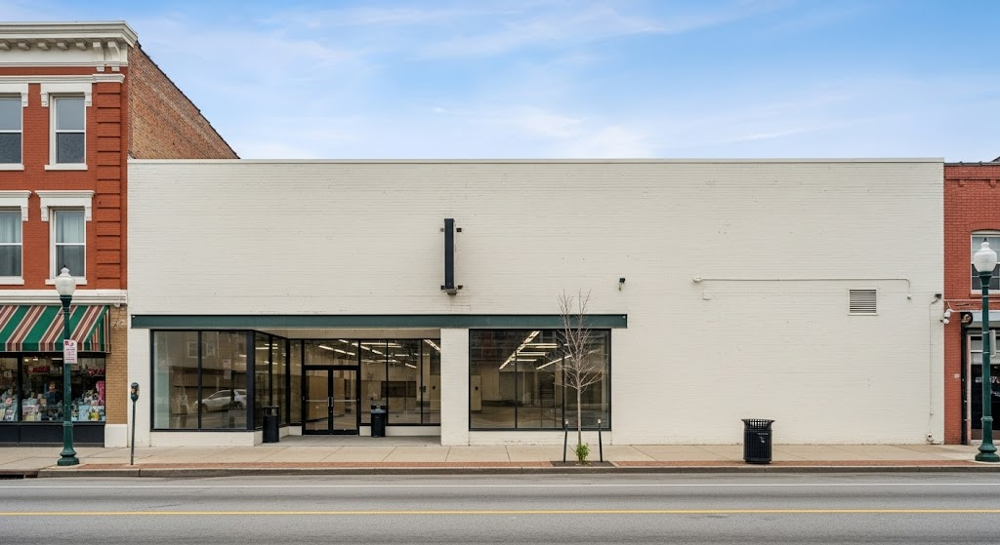

123 Main Street
Baltimore, MD 21224
$1,200,000
Commercial Space | 5,000 sq ft
This property is located within the Broening Manor, Graceland Park, Medford, and O’Donnell Heights Neighborhood Revitalization Plan (2020) area, highlighting specific community-identified needs.
Community Voice: Childcare Demand
"Child care can be an enormous obstacle for working parents, especially single parents… the community attracts additional organizations to the area to lend support."
"Education Readiness Programs… will help parents, caregivers, and family advocates create enriching and supportive learning environments for young children from a newborn to 5 years of age."
Community Voice: Grocery Demand
"Access to food retailers is limited… There is no grocery store within the Neighborhood Revitalization Plan boundary."
"Options that provide greater access to fresh foods and household items should be prioritized."
"A farmer’s market is suggested for the community to not only provide greater access to healthy food options, but also to create a forum for gathering and help unify the community."
Available State Incentives
Neighborhood BusinessWorks
This loan program provides gap financing (i.e., subordinate financing) to new or expanding small businesses and nonprofit organizations located in Sustainable Communities and Priority Funding Areas. Projects must include first floor business or retail space that generates street-level activity in mixed-use projects and improve either a vacant or underutilized building or site.
Strategic Demolition Fund
This program provides grants to local governments and community development organizations for predevelopment activities including demolition and land assembly for housing and revitalization projects. The Fund catalyzes projects that reuse of vacant and underutilized sites that have a high economic and revitalization impact.
Operating Assistance Grants
These grants support operating and technical assistance costs associated with local housing and community and economic revitalization projects that serve designated Sustainable Community areas. Eligible Applicants include nonprofit organizations, local governments, local development agencies, and local development corporations involved in community and economic revitalization activities.
Key Details
- Property Type: Commercial
- Zoning: C-1 (Commercial)
- Lot Size: 0.25 Acres
- Year Built: 1985
- Status: Active
Area Demographics
- Population: 15,230
- Median Household Income: $48,500
- Median Age: 34.5